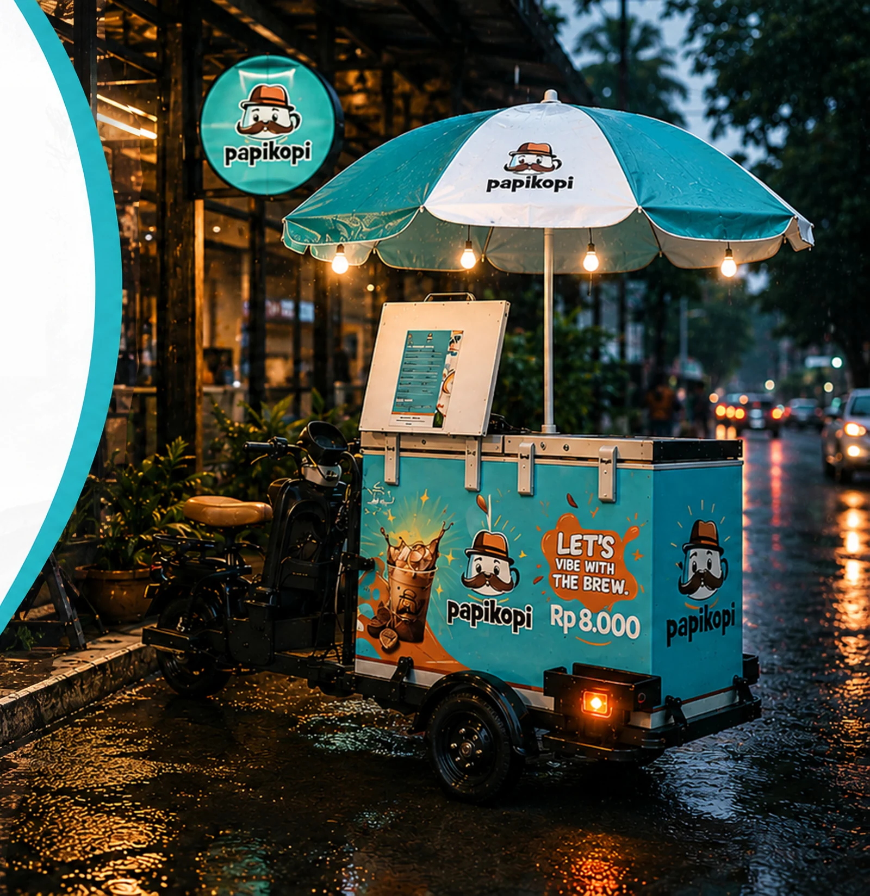
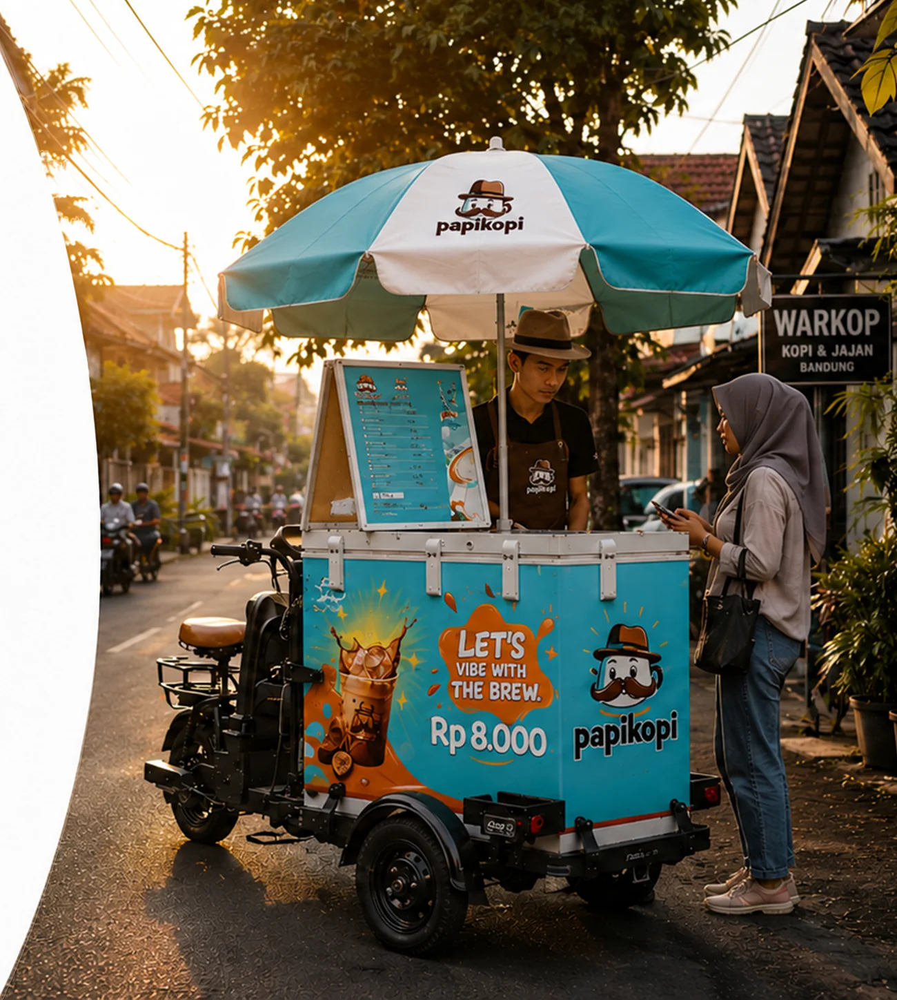
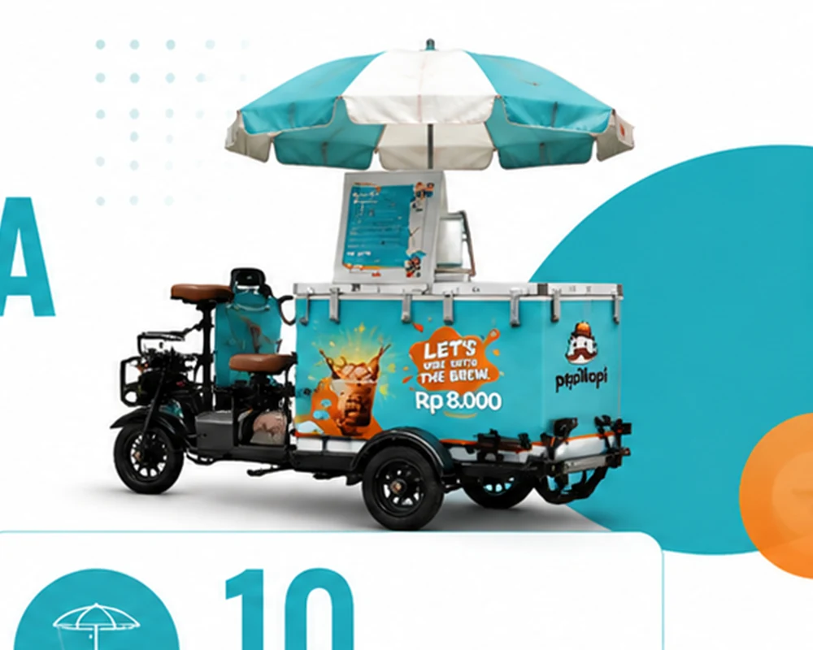
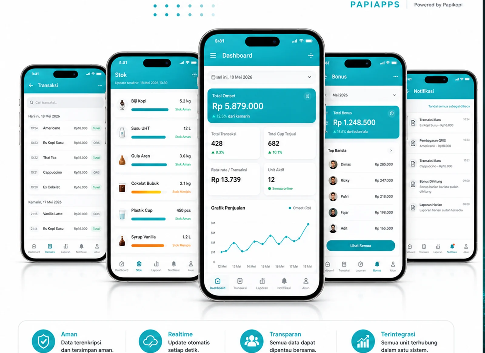
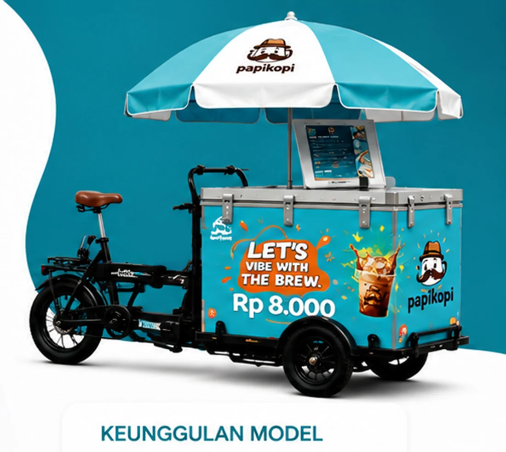
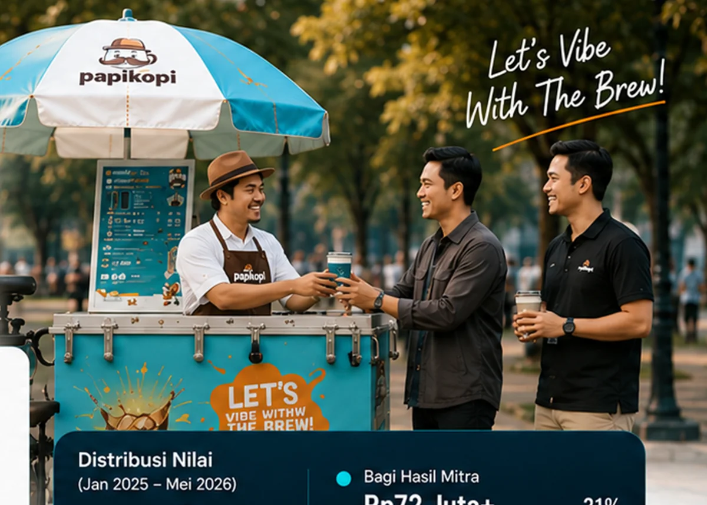
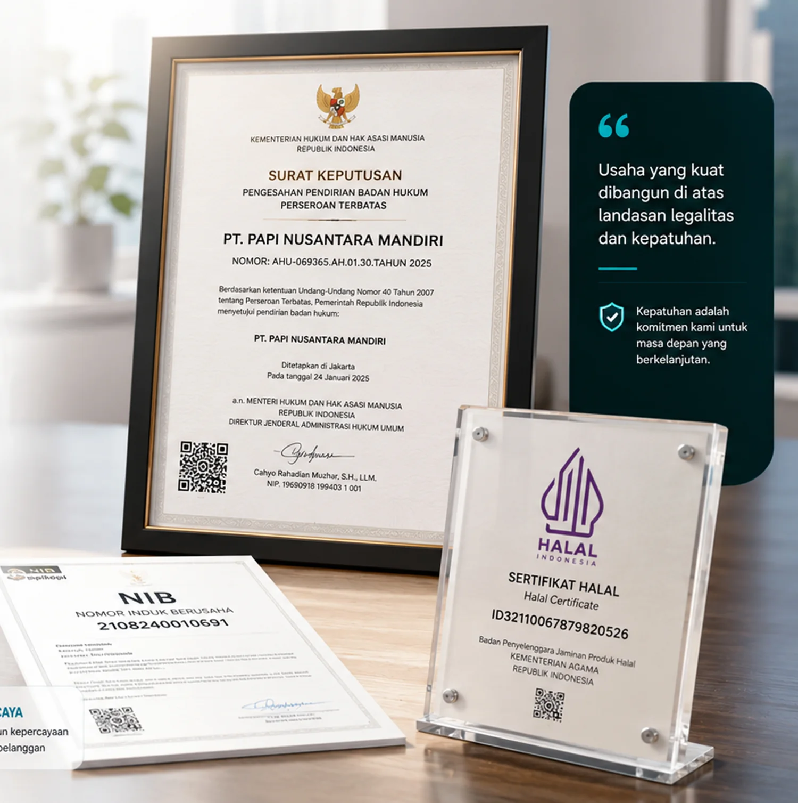
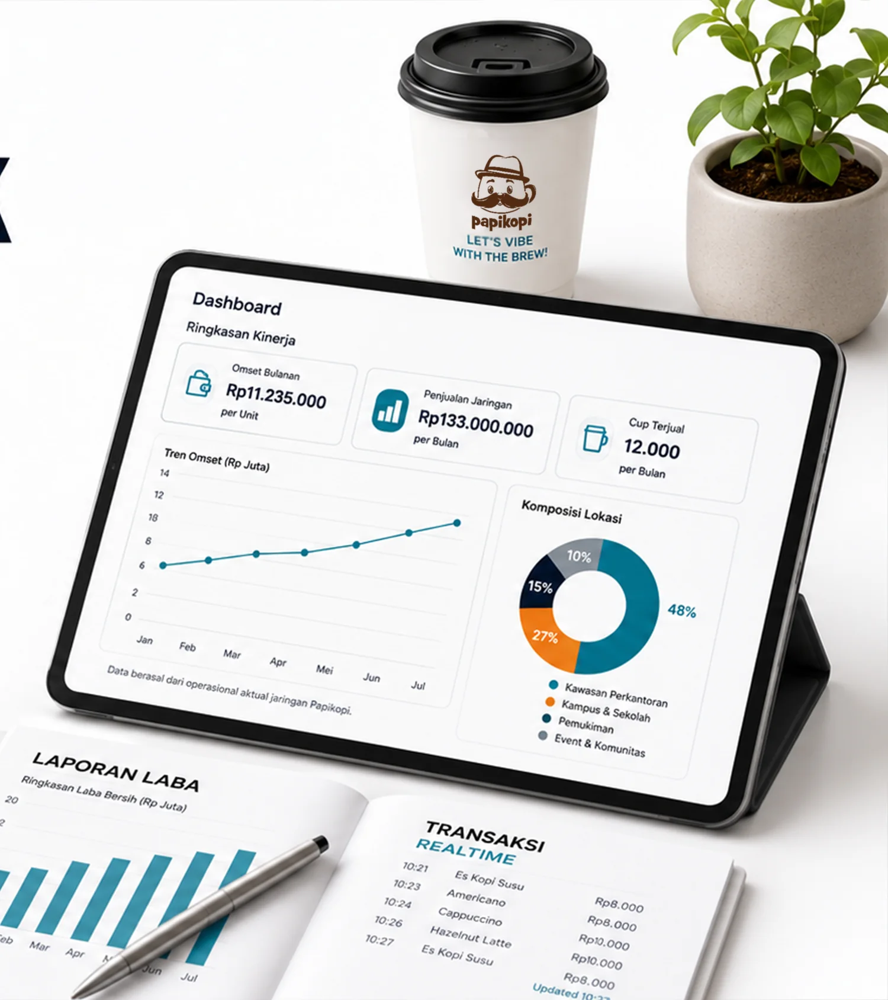

LET'S VIBE WITH THE BREW
Miliki Unit Usaha Papikopi Tanpa Kelola Operasional Sendiri.
Satu unit. Tiga pihak. Satu tujuan. Papikopi mengelola sistem dan operasional, barista menjalankan penjualan, dan Mitra Pemilik memperoleh bagian hasil sesuai performa unit.
✓ Usaha riil
✓ Dikelola Papikopi
✓ Terpantau PapiApps

Nilai kemitraan per unit
Rp25 Juta
Transparan · Terukur · Bertumbuh · Berkelanjutan — data tercatat dan dapat dipantau realtime melalui PapiApps.

Bukan ide. Bukan rencana.
Usaha yang sudah berjalan dan tumbuh dari kondisi lapangan.
Papikopi lahir dari praktik penjualan harian yang nyata: menghadapi pelanggan, cuaca, performa barista, stok, dan arus kas. Sistem kemitraan dibangun dari pengalaman operasional tersebut.
01
Ingin memiliki usaha, tetapi tidak memiliki waktu mengelolanya.
02
Tidak ingin repot mengurus SDM, stok, pemasaran, dan operasional.
03
Memiliki dana, tetapi belum menemukan model usaha yang transparan.
Satu unit. Tiga pihak.
Satu sistem yang membuat semua pihak ikut bertumbuh.
Setiap pihak memiliki peran yang jelas dalam menjalankan dan mengembangkan satu unit usaha Papikopi.
Mitra Pemilik
Menyediakan dana pembentukan satu unit usaha dan memperoleh hak bagi hasil berdasarkan performa unit.
Papikopi
Mengelola SDM, teknologi, operasional, pemasaran, standar layanan, dan pengembangan sistem.
Barista
Menjalankan penjualan harian, melayani pelanggan, serta menjaga kualitas dan performa unit.
Mengapa Papikopi berbeda?
Modern, mobile, transparan, dan dibangun untuk operasional nyata.
Mobile
Gerobak e-bike dapat bergerak menuju lokasi dan peluang pasar yang lebih potensial.
Transparan
Transaksi, stok, bonus, laporan, dan performa unit dapat dipantau melalui PapiApps.
Higienis
Peralatan dan standar operasional dirancang untuk menjaga kebersihan serta kualitas minuman.
Branding Kuat
Maskot, warna, gerobak, dan pengalaman pelanggan membentuk identitas yang mudah dikenali.
Terjangkau
Produk berkualitas dengan harga yang dapat menjangkau lebih banyak pelanggan.
Legal
Dikelola melalui badan hukum resmi dan dilengkapi sertifikasi halal.

“Bukan hanya menjual kopi, tetapi membangun ekosistem usaha yang modern, transparan, dan berkelanjutan.”
Pertumbuhan bertahap
Dari satu gerobak menuju jaringan operasional.
Pertumbuhan dilakukan secara bertahap, berlandaskan data, permintaan pasar, dan kesiapan sistem.
Gerobak pertama
Gerobak aktif
Gerobak aktif
Gerobak aktif
Gerobak aktif
Gerobak aktif
Transparansi bukan fitur. Transparansi adalah budaya.
PapiApps menjadi pusat monitoring operasional.
Sistem digital terintegrasi untuk memantau transaksi, stok, bonus barista, grafik penjualan, laporan laba, dan notifikasi aktivitas unit secara realtime.
- Semua transaksi tercatat.
- Stok dan penjualan dapat dipantau.
- Bonus dihitung secara transparan.
- Laporan tersedia dalam satu sistem.


1 unitRp25 Juta
Model kemitraan
Dana membentuk unit usaha yang menghasilkan.
01
Rp25 juta digunakan untuk membentuk satu unit gerobak operasional.
02
Unit menjalankan penjualan di lokasi yang ditetapkan.
03
Laba bersih dihitung setelah biaya, bonus, dan operasional.
04
Hasil usaha dibagikan: 40% Mitra dan 60% Papikopi.

Bukti distribusi hasil
Pertumbuhan usaha dirasakan oleh seluruh pihak yang berkontribusi.
*Angka berdasarkan laporan keuangan dan aktifitas.
Simulator hasil usaha
Lihat ilustrasi berdasarkan jumlah cup yang terjual.
Geser jumlah cup per hari. Angka di bawah mengikuti skenario data operasional dalam proposal.
20406080
Perhitungan menggunakan interpolasi skenario 20, 40, dan 60 cup per hari.
Simulasi bersifat ilustratif dan bukan jaminan hasil. Hasil aktual bergantung pada performa unit dan kondisi operasional.
Mekanisme akhir kepemilikan
Memiliki jalan keluar yang telah dipikirkan sejak awal.
Setelah masa kepemilikan awal berakhir, Mitra dapat mengajukan mekanisme pengembalian modal pokok sesuai syarat dan ketentuan yang berlaku.
Rp25 juta→1 unit beroperasi→Bagi hasil bulanan→Buyback 100%*
*Detail masa kontrak, proses, dan ketentuan dapat diedit setelah dokumen final tersedia.
✓
Berbasis aset operasional
Dana tidak hanya menjadi fee, tetapi digunakan untuk membangun unit yang menjalankan aktivitas usaha.

Legalitas & kepatuhan
Dibangun di atas badan hukum dan kepatuhan usaha.
PT. Papi Nusantara Mandiri
AHU-069365.AH.01.30.Tahun 2025
Nomor Induk Berusaha
2108240010691
Sertifikat Halal
ID32110067879820526
Siapa yang cocok menjadi Mitra?
Untuk orang yang menghargai data, proses, dan pertumbuhan bertahap.
- ✓Menghargai data
Membuat keputusan berdasarkan evaluasi dan kondisi nyata.
- ✓Nyaman dengan pertumbuhan bertahap
Mencari usaha yang tumbuh konsisten, bukan sekadar lonjakan cepat.
- ✓Melihat usaha sebagai proses
Fokus pada perbaikan dan hasil jangka panjang.

FAQ
Pertanyaan yang sering diajukan calon Mitra.
Jawaban masih dapat disesuaikan setelah struktur kerja sama dan dokumen final disepakati.
Apakah saya perlu menjalankan operasional sendiri?
Tidak. Operasional, SDM, monitoring, dan pengembangan unit dikelola dalam sistem Papikopi.
Apakah ini investasi?
Bukan. Dana Anda digunakan untuk membentuk 1 unit gerobak operasional yang benar-benar berjualan setiap hari, bukan ditempatkan pada instrumen investasi.
Bagaimana pembagian hasil usaha?
Laba bersih unit dibagi 40% untuk Mitra Permodalan dan 60% untuk Papikopi (pengelolaan, pengembangan sistem, dan keberlanjutan bisnis).
Bagaimana saya memantau unit?
Aktivitas unit dapat dipantau melalui PapiApps, termasuk transaksi, stok, bonus, penjualan, dan laporan.
Apa yang terjadi jika masa kontrak berakhir?
Modal pokok Rp25 Juta dikembalikan 100%, sesuai syarat dan ketentuan yang berlaku. Gerobak tetap menjadi aset usaha Papikopi.
Apakah hasil usaha dijamin?
Tidak. Hasil usaha bergantung pada performa unit dan kondisi operasional. Simulator hanya berfungsi sebagai ilustrasi.
Bagaimana jika performa unit menurun?
Papikopi dapat mengevaluasi lokasi, performa barista, menu, biaya, promosi, serta strategi operasional unit.
KAMI MENCARI REKAN BERTUMBUH
Siap mengenal kemitraan Papikopi lebih dekat?
Mari berdiskusi untuk memahami model unit usaha, cara kerja, PapiApps, pembagian hasil, dan proses menjadi Mitra Pemilik.
Harap hubungi kami pada jam operasional untuk mendapatkan respons lebih cepat.